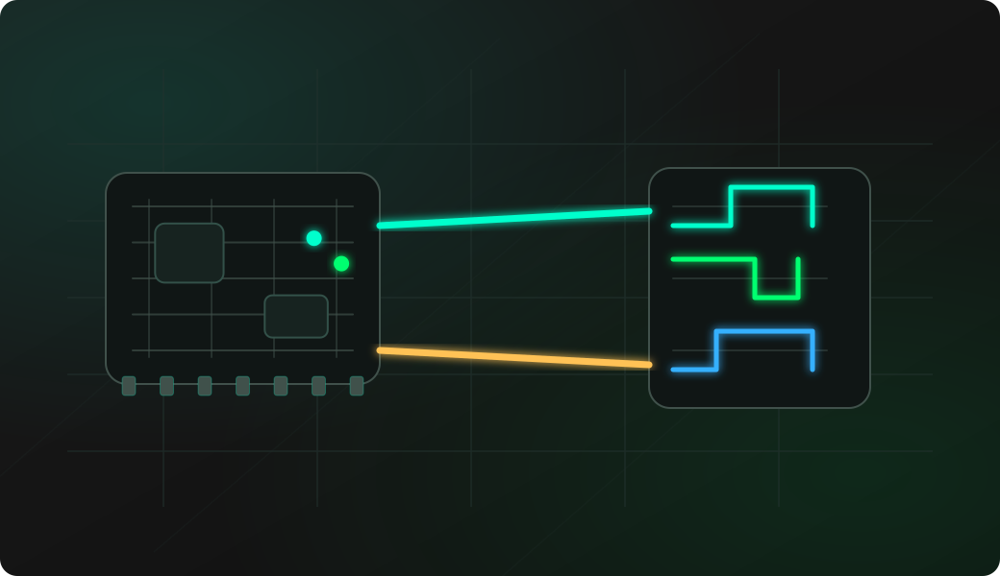

93Cxx EEPROM probe
Identify the connected Microwire EEPROM, confirm a supported model and avoid interpreting the wrong capacity or organization.
ESP32-S3 3-Wire Microwire EEPROM debugging
ESP32 Bit Pirate turns a compatible ESP32-S3 board into a practical 3-Wire EEPROM workbench. Use it to probe 93C46, 93C56, 93C66, 93C76 or 93C86 Microwire chips, choose the correct x8 or x16 organization, create safe dumps and troubleshoot CS, SK, DI and DO wiring before any write or erase operation.

Start read-only. Confirm chip model, ORG state and wiring before writing or erasing any EEPROM, and keep a verified dump outside the target device.
Connect CS, SK, DI, DO, VCC and GND with short wires or a known-good clip.
Check the ORG pin state so x8 or x16 organization is known before interpreting a dump.
Start 3WIRE mode and confirm the configured CS, SK, DI and DO pins.
Open the EEPROM shell, probe the chip and select the matching 93Cxx model.
Dump the EEPROM, repeat the dump, then compare results before any write or erase workflow.
mode 3wire
config
eepromExample CLI flow. See the 3WIRE wiki for exact syntax, EEPROM shell menu entries and firmware-specific options.
Use this overview to choose the right 93Cxx Microwire EEPROM workflow before opening a detailed recipe.
Identify the connected Microwire EEPROM, confirm a supported model and avoid interpreting the wrong capacity or organization.
Back up 93C46, 93C56, 93C66, 93C76 or 93C86 memory before any repair, write, erase or board-level experiment.
Use the ORG pin state to choose the right memory organization before trusting byte order, size or address interpretation.
Practice small write tests only after a verified backup and only on replaceable lab parts or devices you are allowed to modify.
Use destructive erase actions only after saving the original contents and confirming the chip is not production-critical.
Separate swapped data lines, floating ORG, weak clip contact and target-board interference before blaming the EEPROM.
Microwire EEPROMs often appear in old modules, automotive boards, appliances and small configuration memories. A small external workflow helps preserve data before experiments.
Use 3WIRE mode for 93Cxx-style EEPROMs instead of treating the chip like a normal SPI flash or 25X EEPROM.
Probe, record the chip marking and ORG state, then make at least two matching dumps before any write or erase operation.
Check CS, SK, DI, DO, ground, supply voltage, clip pressure and whether the target board is still driving the EEPROM.
These notes stay short. The detailed command references live in the project documentation and firmware repository.
93Cxx Microwire EEPROMs use chip select, clock, data input and data output lines. DI and DO swaps are a common cause of silent probes.
ORG selects x8 or x16 organization on many chips. A floating or wrongly tied ORG pin can make a valid dump look wrong.
Use a known-safe 3.3 V or 5 V setup and avoid unsupported levels. Confirm common ground before connecting signal wires.
In-circuit dumps can fail if the original board drives the EEPROM. Remove power or isolate the chip when needed.
Most failures come from swapped DI/DO, wrong organization, poor clip contact, target-board interference or destructive actions taken before a backup.
Check CS, SK, DI, DO, VCC, GND, clip orientation and whether the chip is a supported 93Cxx Microwire EEPROM.
Confirm the exact chip model and ORG pin state before assuming the read is corrupt.
Check wiring and target isolation first. A blank chip may also be harder to identify during probe.
Repeat the dump with shorter wires, better clip pressure and stable supply before comparing memory contents.
Verify write-enable behavior, organization mode and circuit write protection, and never test destructive actions on production data.
These pages are the task-level 93Cxx Microwire workflows. This overview keeps the protocol-level guidance here, while each recipe covers setup, commands and troubleshooting in detail.
This page is a protocol overview. Use the site index for the full web experience, or GitHub for source code, firmware documentation and the 3WIRE command reference.
Install the firmware on a supported ESP32-S3 board from a compatible browser.
Open Web FlasherOpen the maintained firmware wiki for 3WIRE mode, EEPROM shell commands and 93Cxx notes.
Open 3WIRE command referenceCheck compatible boards and exposed GPIOs before wiring a Microwire EEPROM.
View supported ESP32-S3 boardsUse a compatible browser to connect to the ESP32 Bit Pirate serial CLI.
Open Web Serial Terminal for ESP32 Bit PirateCapture CS, SK, DI or DO timing when you need to inspect the physical signal behavior.
Open Logic AnalyzerBrowse the complete recipe index for other buses, firmware tasks, signal capture and hardware workflows.
Browse all hardware debugging recipesUse the source repository for firmware code, issues, releases and project-level documentation.
Open GitHub repositoryShort answers for common questions before moving into a detailed workflow.
Yes. ESP32 Bit Pirate can open the 3-Wire EEPROM shell, probe a supported 93Cxx Microwire EEPROM and dump its memory after the chip model and ORG setting are confirmed.
No. 3-Wire Microwire EEPROMs use CS, SK, DI and DO lines and require the dedicated 3WIRE mode and EEPROM shell rather than the normal SPI flash workflow.
No. Start with a probe, record the chip model and ORG state, then make at least one read-only dump before any write or erase operation on a replaceable lab chip.